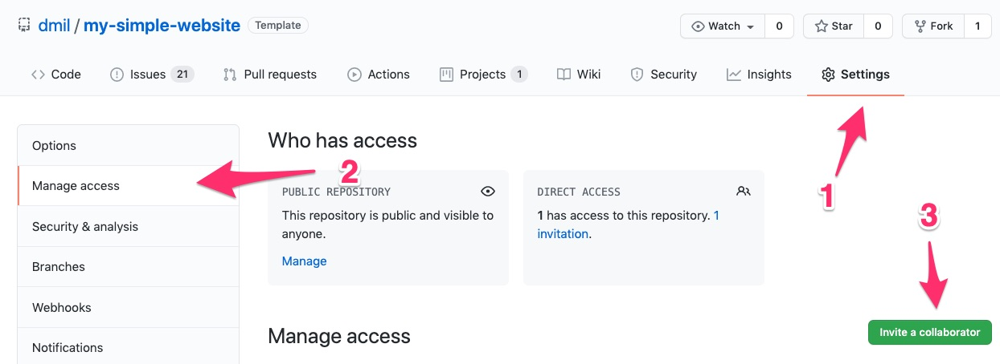

Part 2: Introduction to Git and GitHub
Git Introduction
Git (/ɡɪt/) is a version control system (VCS) for tracking changes in computer files and coordinating work on those files among multiple people. It is primarily used for source code management in software development, but it can be used to keep track of changes in any set of files. As a distributed revision control system it is aimed at speed, data integrity, and support for distributed, non-linear workflows. -Wikipedia
Git is an open source program for tracking changes in text files. -GitHub (https://help.github.com/articles/github-glossary/)
What is Git?
Keeping track of file versions is hard.

So what is Git, and why does it help us?
Above all else, Git is a fast and distributed version control system, that allows you to efficiently handle projects large and small.
Here are some problems we face as developers, and how git solves them:
Reverting to past save points (commits)
Git allows us to make save points at any time. These save points are called ‘commits’. Once a save point is made, it’s permanent, and allows us to go back to that save point at any time. From there, we can see what the code looked like at that point, or even start building off that version.
Keeping track of what each save point ‘meant’ (commit messages)
Every commit has a description (commit message), which allows us to describe what changes were made between the current and previous commit. This is usually a description of what features were added or what bugs were fixed.
Additionally, git supports tagging, which allows us to mark a specific commit as a specific version of our code (e.g. ‘2.4.5’).
Comparing changes to past save points (diff)
It’s often important to see content of the actual changes that were made. This can be useful when:
- tracking down when and how a bug was introduced
- understanding the changes a team member made so you can stay up-to-date with progress
- reviewing code as a team for correctness or quality/style
Git allows us to easily see these changes (called a diff) for any given commit.
Non-linear workflow (branches)
Git enables you to work using a non-linear workflow. This means that you can have multiple versions of a project or “branches” with different save points, or “commits”, simultaneously within the same folder and easily toggle bgttween them. You can split new branches off a project when you’re looking to experiment or implement a new feature, and you can merge those branches back into the main (formerly known as “master”) branch when you’re ready to incorporate them into a project.

Fearlessness in making changes
In developing software, we often want to experiment in adding a feature or refactoring (rewriting) existing code. Because git makes it easy to go back to a known good state, we can experiment without worrying that we’ll be unable to undo the experimental work.
Git versus GitHub
Git is a distributed version control system. It is a technology.
GitHub is a social coding platform where git repositories are stored and where people can collaborate on projects. GitHub is great both for collaboration within your organization, but also provides an excellent model for open source collaboration across organizations or with the public.

On GitHub you can find Git repositories.

Learn More: https://jahya.net/blog/git-vs-github/
Some Vocabulary
The basics:
- Git - version control software
- Repository - a folder containing your files and also containing a structure that helps keep track of changes in those files. When you intialize a repository, git creates a hidden folder (
.gitfolder) that stores the changes to those files. - Commit - the basic unit of a git repository is a commit. It is a set of changes to a file. A commit usually comes with an id as well as a commit message that describes the change.
Working with others:
- GitHub - a place to host git repositories and collaborate
- Local Repository - the version of a git repository on your local computer
- Remote Repository - the version of a git repository stored somewhere else that your local repository is connected to (frequently on GitHub)
GitHub Introduction
GitHub is a place for:
- Storing and viewing your Git repositories
- Collaborating on coding projects within an organization
- Open Source Collboration: People in other organizations or complete strangers can see your code and participate with you on your project. They can suggest fixes, point out errors, and start discussions. You can find other people’s work, and make sure you’re not duplicating something that already exists. Or you can interact with someone who has already worked on something similar to what you’re trying to tackle.
- Web Hosting: The “Github Pages” feature allows you to host a static website for free, right on GitHub.
Other Uses
- A place to store code
- A place to store data
- A place for discussion about data and code
- A place for open source collaboration on projects
- A place for collaboration within an organization
- A place to find people working on the same things you are
- A place to find sources / people with expertise in a particular dataset
- A place to find other digital tools (scrapers, file converters, etc)
- A place to find open source work and analysis
- A portfolio of your technical work (or technical learning)
Lets Dive In!
Vocab
- local repository a folder stored on your computer
- remote repository a folder stored on on GitHub
Lets take a look at a repository that is on GitHub.
- https://github.com/code4MDM/simple-r-script
(Some of) GitHub’s Features
The README.md file
Github looks for a “readme” file and renders it as you’re navigating through the file structure. This is a great way to guide people through your code.

Readme files are often given the .md extension, meaning they’re written in a language called markdown that allows for nicer formatting. You can check out this markdown cheet sheet (https://www.markdownguide.org/cheat-sheet/) if you want to see how formatting works, but you can also save a readme files as plain text. Github will also detect .txt files, or you can just write plain text inside your .md file.
Commit Log
Vocab
commit - the basic unit of a git repository is a commit. It is a set of changes to a file. A commit usually comes with an commit id as well as a commit message that describes the change.
commit log (aka Git History) - all of the commits (previous changes) to all of the files in your repository
https://github.com/dmil/my-simple-website/commits/master
History, Raw, and Blame for any file
- Raw - actual contents of the file without any formatting applied.
- example: https://github.com/fivethirtyeight/chartbuilder-2/blob/master/src/styles/core.scss
- History - every change ever made to that file within this branch.
- example: https://github.com/fivethirtyeight/chartbuilder-2/commits/master/src/styles/core.scss
- Blame - provenance of each line currently in the file you’re looking at in the branch you’re looking at
- example: https://github.com/fivethirtyeight/chartbuilder-2/blame/master/src/styles/core.scss
Branches
Pull Requests
Proposing Edits

You can edit a file in GitHub in a new branch, thus proposing a change without actually making the change in the master branch. Just make sure to leave a meaningful description of the change you made in the commit message.
Drag and Drop

Collaboration
Collaborators can push to the repository without asking your permission, they have full read and write access.

If I wasn’t a collaborator, I could still work with you on an open source project through a process called forking where I can make a copy of your repository in my GitHub account, make changes, and request that you merge them back into your project. We will discuss forking more in depth later.
Serving up Websites!
GitHub is also great for serving up static websites. GitHub is only storing the code. Luckily, if your code happens to be a website, GitHub can also host it for you through a feature called “GitHub Pages”.
Simply go to the “settings” menu, scroll down to “GitHub Pages”, and select “master branch”

Whatever is in your master branch on GitHub should now appear at
http://your-username.github.io/repository-namein my case it is http://madisoncoots.github.io/
GitHub for things other than code
- Auditing system for changes on a file
- For collaboratively editing a text document
- For drafting government web design standards!
- Open comment period for policy
- Drafting and collaborating on legal documents
- Design (image diff)
- https://help.github.com/articles/rendering-and-diffing-images/
- Open journalsim showcase
- https://github.com/showcases/open-journalism
- Github for Government
- https://government.github.com/
- https://government.github.com/community/
Using Git Locally
Now let’s learn how to use Git locally from our computer. While there are GUIs (graphical user interfaces) for Git on your computer like GitHub Desktop, we’re going to use the command line to learn Git. That’s because this is a key transferrable skill that applies to any kind of coding.
- Learning objective: Build a “mental model” of what your computer is doing.
Some Vocabulary
- Git - version control software
- Repository - a folder containing your files and also containing a structure that helps keep track of changes in those files. When you intialize a repository, git creates a hidden folder (
.gitfolder) that stores the changes to those files. - GitHub - a place to host git repositories and collaborate
- Local Repository - the version of a git repository on your local computer
- Remote Repository - the version of a git repository stored somewhere else that your local repository is connected to (frequently on GitHub)
- Commit - the basic unit of a git repository is a commit. It is a set of changes to a file. A commit usually comes with an id as well as a commit message that describes the change.
Within a Repository you have
- Untracked Changes - files that are in your folder but that git doesn’t pay attention to.
- Staging Area - a place where you can put files before you commit them. Once files are in the staging area, git is paying attention to them.
- Commit Log (aka Git History) - all of the commits (previous changes) to all of the files in your repository.
Components of a Git Repository
- The working directory
git initcreates a git repo inside current working directory. This means that this command can turn a regular folder into a git repository by generating a hidden.gitfolder that starts to keep track of changes.git clonetakes a git repo from somewhere else and makes a copy of that repo into your current working directory. We will frequently be cloning repos from GitHub.
- The staging area
git add .adds changes from the working directory to the staging areagit add <filename>adds changes to filenames specified from the working directory to the staging area
- The commit
git commit -m "commit message"adds changes in staging area to the repositorygit logshows
Protip: Run git status after each command in the beginning because it allows you to visualize what just happaned.
Pushing to GitHub
Key Terms
- github - a service that hosts git remote repositories, and provides a web app to interact / collaborate on them
- remote - another repository that can be syncronized with a remote
- upstream - the name for a remote read-only repository
- origin - the name for a remote read-and-write repository
- clone - download an entire remote repository, to be used as a local repository
- fetch - downloading the set of changes (commits) from a remote repository
- pull - fetching changes and merging them into the current branch
In order to show your remotes, you can run
git remote -v show. The default remote is named “origin”In order to push, you run
git push. By default this will push from the branch you are on to a remote branch with the same name. (If you’d like to specify a branch, you can do that. The full formulation of this command isgit push <remote> <branch>. So, for example you might saygit push origin mainto push to the “main” branch of the “origin” remote.)
❇️ Example: simple-rscript
Let’s give it a try! We’re going to clone a repository for a simple R script from GitHub down to our computer where we can work with it locally. We will make some edits to the code, commit those changes and then push the changes back up to the remote repository in GitHub.